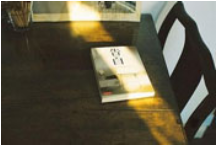
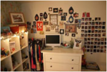

- 1
- 2
- 3
- 4
- 5
- 6
- 7
- 8
- 9
个人博客模板 Blog Template


文章推荐
- 
-
如何建立博客？
 王会丽发布时间：2013:05:14 12:00:00分类：学无止境
王会丽发布时间：2013:05:14 12:00:00分类：学无止境想必很多人都想建立一个，属于自己的个人博客，把自己的一些学习的经验和经历，通过互联网的形式来分享给别人。通过分享与网友进行互动，让更多的人了解和认识你，并且树立自己在互联网上的个人

-
前端构建工具之“Webpack”
王会丽发布时间：2013:05:14 12:00:00分类：学无止境前言：还记得刚接触前端的时候，对于“前端构建工具”这个词一脸茫然。并不知道使用它，能为我们做些什么事情。以及它能帮我们，解决什么样的问题？
- 
-
一个前端的自我修
王会丽发布时间：2013:05:14 12:00:00分类：学无止境今天给大家分享的主题是前端的自我成长,这是一个关于成长的话题。很多人都有这样的感觉:听了很多技术圈子的分享,有的有深度,有的循循善诱,深入浅出,但是呢!几年下来,到底哪些用上了,哪些对自己真的有帮
-
利用百度数据来做SEO优化系列
王会丽发布时间：2013:05:14 12:00:00分类：学无止境最近一直忙着公司项目的上线，以及还没来得及跟大家分享，刚好趁着5.1放假，有时间就接着上次的话题来跟大家一起分享。 在利用百度数据来做SEO优化系列（一）这篇文章中提到了，现在做SEO优化，不
-
HTML5移动端手机网站开发流程
王会丽发布时间：2013:05:14 12:00:00分类：学无止境最近一直在研究移动手机网站的开发，发现做手机网站没有想象中的那么难。为什么会这么说呢？我们试想下:我们连传统的PC网站都会做， 难道连一个小小的手机网站难道都搞不定吗？其实手机网站就是
-
如何学习网页制作（个人经验）
王会丽发布时间：2013:05:14 12:00:00分类：学无止境最近看了聪哥的（SEO白手起家的创业录）有很深的感触!我觉得有一些话说得很有道理：如果你分享的东西，不是你亲自经历过，或者实践过的话，你的分享是很难打动别人和得到别人的认同。其实最真实
-
学习seo的一些心得
王会丽发布时间：2013:05:14 12:00:00分类：学无止境从学习SEO起到现在差不多两个月时间了，也算是慢慢的走向seoer这个行业。在学习SEO这个过程中，我发现SEO这个行业相对于其它行业比较抽象。不像学其它的技术一样，你马上学出来，就能看到实战效
Web前端
3 关于响应式布局
站内搜索
关注博客
邮箱订阅：
联系王会丽：
加入群聊：
关注博客：
热门推荐
最新评论
-
老姚16小时前
在 如何建立个人博客？ 中评论 坚持写博是不容易的
-
屈大龙8月31日
在 前端构建工具之“Webpack” 中评论是不是类似gulp
-
淡定17小时前
在 留言板中评论博主我再问个问题啊，还是多说那个插件，
-
王建8月31日
在 留言板 中评论找到了，自己瞎眼了
-
淡定8月30日
在 留言板 中评论有的，在多说后台设置---->>评论显示方式那里，我设置了十条就分页
一路走来
-
2014-03-7
个人博客发布1.0 Beta版本
-
2014-03-23
完善网站基本功能：增加内页评论功能...1.0版本正式发布
-
2014-08-20
对栏目进行改版布局，并添加新功能：百度站内搜索和段亮博客官方微信公众号！3.0 Beta版本发布
-
2016-08-14
对网站整体风格进行改版，并对代码进行重新优化构建。增加网站站内搜索功能！3.0版本正式发布
-
淡定8月30日
在 留言板 中评论有的，在多说后台设置---->>评论显示方式那里，我设置了十条